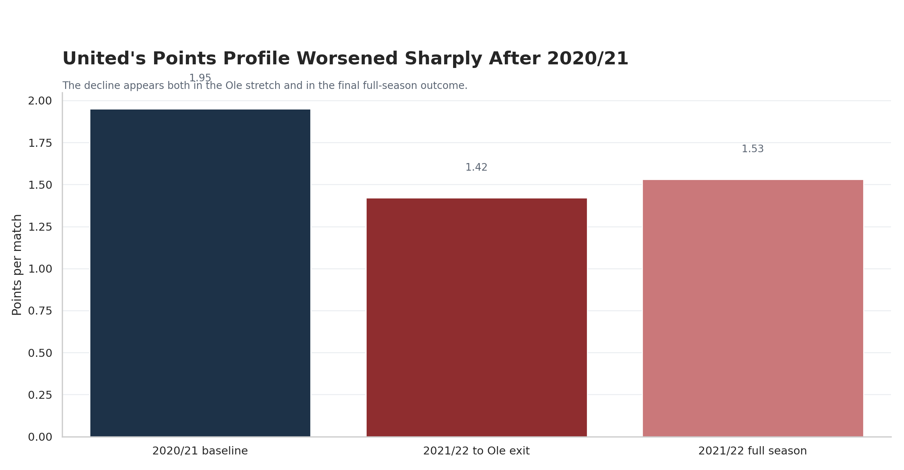
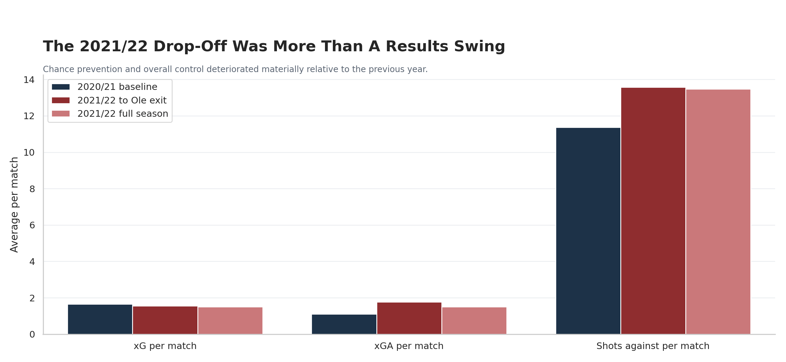
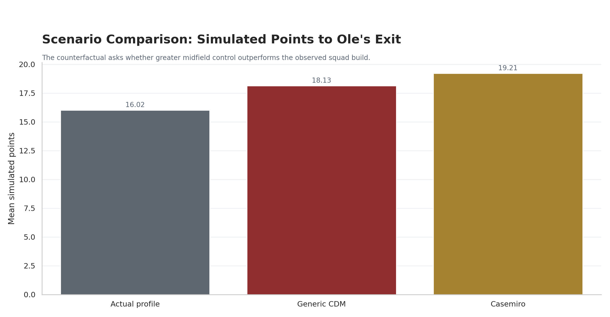
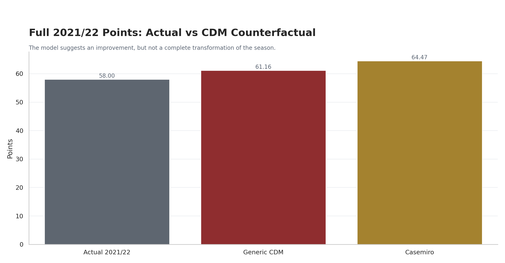
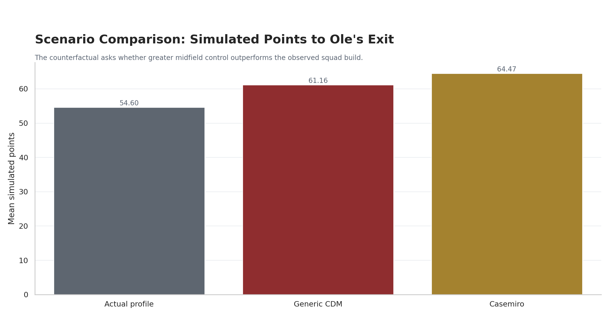
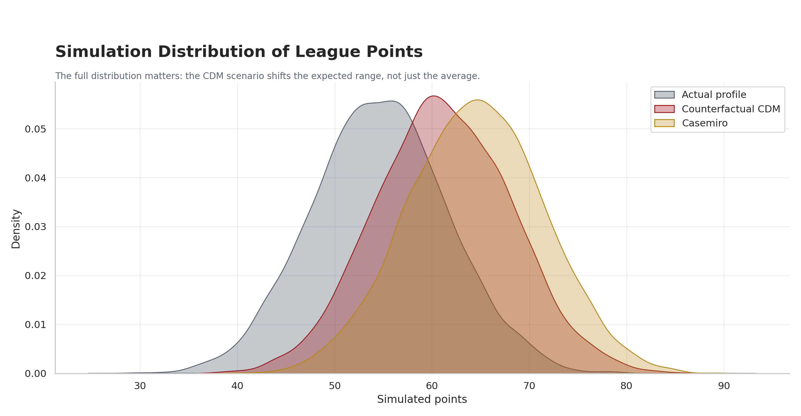
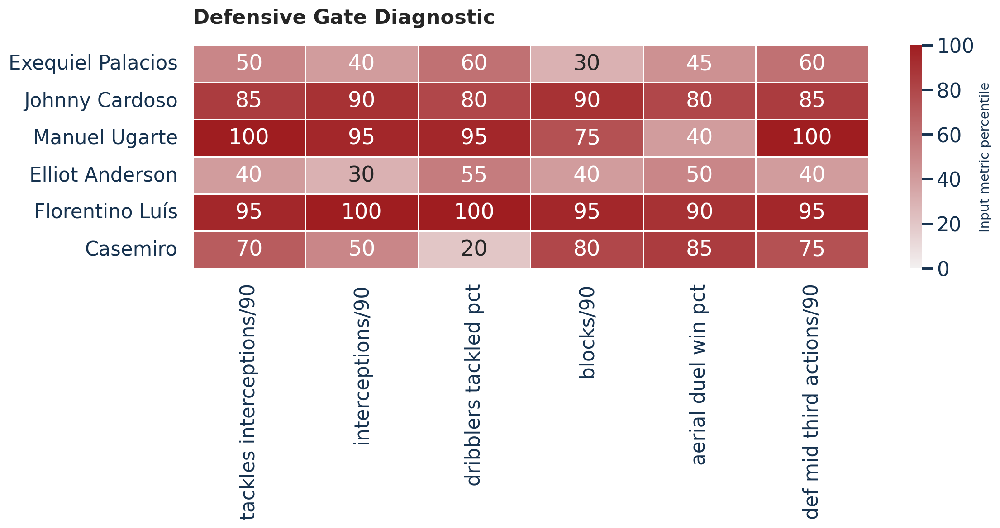
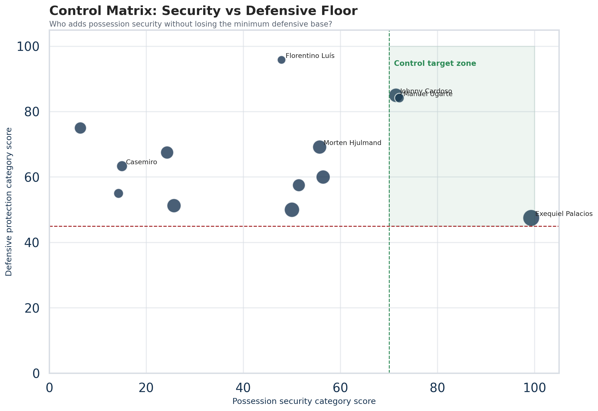
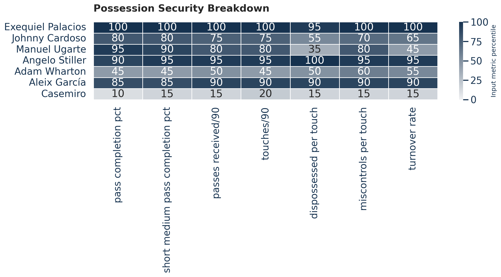

Manchester United Don't Just Need a Casemiro Replacement. They Need Control.
From the 2021 squad-building mistake to a public-data screen for United's next midfield profile.
There is a version of the Cristiano Ronaldo debate that is too easy.
One side says Ronaldo ruined Manchester United. The other says he scored goals in a broken team and became a convenient scapegoat. Both arguments have some truth in them, which is usually where football discourse goes to die.
I'm less interested in whether Ronaldo was the problem. I'm more interested in why he felt like the solution.
Because the most revealing thing about Manchester United's 2021 summer was not simply that they signed Cristiano Ronaldo. It was what that signing implied about how the club understood itself.
Ronaldo was the most glamorous answer imaginable: goals, history, aura, shirt sales, Champions League nights, emotional payoff. If the problem was a shortage of ruthlessness, the move made sense almost instantly.
But high-profile decisions are not always high-quality decisions.
The better question is not: was Ronaldo still good? He was. The better question is: did United use an elite squad-building resource on the capability they most urgently lacked?
And I think the answer is no.
That sentence is the starting point for this piece. The rest is an attempt to make it more disciplined.
First, I look back at the 2021 decision through a public-data counterfactual: what if United had added a control-oriented defensive midfielder instead of another elite attacker?
Then I take the same idea forward. If United's recurring problem is control, what should they actually look for in the next midfield signing?
Because replacing Casemiro should not mean finding the player who looks most like peak Casemiro. That would be a very United way of solving yesterday's problem. The next signing should not only win duels. It should prevent some of them from happening.
Part 1The 2021 Question Was Never Just Ronaldo
The Ronaldo transfer is still difficult to discuss cleanly because it sits at the intersection of nostalgia, celebrity, goals, and collapse.
But strip away the emotion and the football question becomes fairly simple.
United finished 2020/21 with 74 league points. They were not perfect, but they had a positive underlying profile. The following season, they fell to 58 points. By Ole Gunnar Solskjaer's exit, the decline was already visible.
The team did not just become a little less clinical. It became less stable.
In the sample I built from Understat match-level Premier League data, United went from 1.95 points per match in 2020/21 to 1.42 by Ole's exit in 2021/22, before recovering only slightly to 1.53 over the full season. The underlying process moved in the same direction: more danger conceded, more shots allowed, and a weakened xG profile.


That matters because once the decline is visible on its own terms, the Ronaldo debate becomes less interesting as a morality play.
The question is no longer: "Was Ronaldo good or bad?" The question becomes: "What type of problem did United actually have?"
And to me, it looks much more like a control problem than a finishing problem.
Output vs Control
Output is easy to see. Goals. Shots. Chance creation. Final-third production. Star forwards. Moments. The kind of things that make highlight packages and sell a transfer window.
Control is less glamorous.
It is the ability to keep the ball without constantly exposing yourself. It is midfield spacing. It is rest defence. It is suppressing transitions before they become panic. It is protecting centre-backs from facing repeated broken-field attacks. It is being able to move from one phase of the game to another without the entire structure collapsing.
Ronaldo solves output. A strong control midfielder solves something else.
He reduces the cost of losing the ball. He gives the team a better platform. He helps make attacks less desperate and defending less emergency-driven.
That is the distinction United seemed to miss.
To be clear, this is not an anti-Ronaldo argument. It is not even really about Ronaldo as an individual. It is about problem-solution fit.
If a team lacks finishing, adding one of the greatest finishers ever is coherent. If a team lacks control, adding another final-third star can make the team more exciting without making it more stable.
That is what United risked doing in 2021.
What the Counterfactual Asked
The model I built was deliberately simple.
I used public match-level Premier League data for Manchester United's 2020/21 season, the 2021/22 stretch up to Ole's exit, and the full 2021/22 campaign. The core variables were goals, xG, xGA, shots for, and shots against. I then simulated match outcomes with a Poisson goal model to estimate win, draw, and loss probabilities under alternative team profiles.
The counterfactual was not: what if United had signed a magical midfielder and fixed everything? That would be useless.
The actual question was narrower: what if United had slightly reduced attacking output without Ronaldo, but added a control-oriented defensive midfielder who improved defensive stability and shot suppression?
The main case was a generic elite CDM profile. Not a mystery superhero. Just the kind of capability type that was available in the market: someone closer to Manuel Locatelli or Boubakary Soumaré as a strategic profile, not a player-specific claim.
I also included a Casemiro-style scenario, but treated it as an upper-bound case. That matters. The Casemiro version is useful because United eventually bought that type of player in 2022. But if the entire piece becomes "United should have signed Casemiro earlier," it starts drifting into hindsight fan fiction.
The generic CDM is the cleaner strategy claim. The Casemiro scenario is the sharper secondary illustration.
Data and Model
Public match-level Premier League data, transformed into a transparent scenario model using xG, xGA, goals, shots, and Poisson simulations.
Counterfactual Logic
- Without Ronaldo, attacking output falls slightly.
- A control midfielder improves defensive stability.
- The generic CDM is the main strategy case.
- The Casemiro-style case is an upper-bound illustration.
The Result: Better, But Not Magically Fixed
By Ole's exit, United had taken 17 actual league points.
The model's observed-profile simulation came out around 16 points, which is close enough to treat the baseline as reasonable. The generic CDM scenario lifted the expected points total to about 18.1. The Casemiro-style upper-bound lifted it to about 19.2.

That is not transformational. It does not save the season by itself. It does not turn United into a title challenger.
But it does matter. It suggests that a more control-oriented midfield alternative probably improves the early-season trajectory. Not enough to erase everything wrong with the team, but enough to say the fit would likely have been better.
Across the full league season, the same pattern holds. United actually finished with 58 points. The generic CDM scenario raised that to about 61.2. The stronger Casemiro-style case raised the mean to roughly 64.5.
Again, this is not a miracle. And that is why I trust it more.
A counterfactual that turns United into a 90-point team would be nonsense. This one says something more modest and more believable: better midfield control probably improves United, but one transfer does not fix an institution.



The Conclusion Is Not That Ronaldo Caused The Collapse
The model does not prove that Ronaldo caused United's decline. It does not prove that Casemiro would definitely have delivered 64 or 65 points. It does not prove that one better signing would have saved Ole, repaired the dressing room, modernised the club, solved pressing structure, or fixed years of incoherent squad planning.
That would be too simple.
What it does show is narrower and more useful. Once you model United as a team that needed control and protection rather than more star finishing, the alternative profile improves the outcome in a plausible way.
That is enough to support the strategic conclusion: Ronaldo may not have been the whole problem. But he may have been the clearest sign that United misdiagnosed what kind of solution they actually needed.
And that is why the lesson still matters.
Because United are now facing another version of the same question.
Casemiro is ageing. Ugarte gives them defensive/security value but not enough progression. Mainoo's long-term role still needs careful thought. Bruno is still Bruno: brilliant, chaotic, high-value, high-variance.
So if United need midfield control, what should they actually buy?
Part 2Replacing Casemiro Should Not Mean Cloning Casemiro
This is where I think the conversation can go wrong.
If you frame the problem as "replace Casemiro," the instinct is to search for someone who looks like Casemiro statistically: tackles, interceptions, duels, defensive output.
That is part of it. But it is not enough.
Peak Casemiro was an elite defensive midfielder because he could destroy attacks, dominate duels, screen the back line, and make decisive defensive interventions. But United's current problem is not only that they need someone to win more duels.
They need someone who reduces how often the team has to live in duels.
That is a different brief.
The next midfielder needs to preserve enough of the defensive floor while improving the possession-control problem. He must help United stay connected in midfield, avoid cheap turnovers, manage transitions, and progress the ball without turning every possession into a coin flip.
It should prevent some of them from happening.
Building a Public-Data Control Midfielder Screen
To make that idea more concrete, I built a public-data recruitment screen for a modern Casemiro replacement profile.
This is not proprietary scouting data. It is not a final signing verdict. It is a transparent framework for turning an abstract tactical need — "more control" — into measurable recruitment traits.
The model scores midfielders across five categories:
| Category | Weight | Why it matters |
|---|---|---|
| Defensive protection | 30% | Preserve the defensive floor |
| Transition control | 25% | Reduce chaos after possession breaks |
| Possession security | 25% | Help United keep the ball and control rhythm |
| Progressive value | 15% | Move play forward without becoming reckless |
| Age / availability | 5% | Add practical squad-building context |
The weights are subjective, but they are not random.
Defensive protection gets the highest weight because the player still has to survive defensive responsibility. If the next midfielder cannot protect the back line, he is not a Casemiro replacement profile in any meaningful sense.
Transition control gets 25% because United's issue is not only settled defending. It is what happens after possession breaks. Can the player recover loose balls, slow counters, avoid cheap fouls, and stop chaos early?
Possession security also gets 25% because this is the heart of the thesis. United need control. A midfielder who constantly loses possession will recreate the same emergency-defending problem even if he is good at winning the ball back.
Progressive value gets 15% because United still need the player to move the ball forward. But this should not become a pure creator search. The role is not "find another Bruno." It is "find someone who can progress play without making the structure more fragile."
Age and availability get 5% because recruitment is not abstract. But I kept it light because age should not overpower the football profile.
The basic formula is: 30% defensive protection + 25% transition control + 25% possession security + 15% progressive value + 5% age/availability.
Each input metric is converted into a percentile-style score within the screened pool. For negative events — fouls, cards, miscontrols, dispossessions, turnover rate — the score is inverted so safer players are rewarded.
A 100 does not mean "world class." It means the player is high relative to this public screened pool. That distinction matters.
Why I Used a Defensive Gate
There is one more piece of the model that needs explaining: the defensive gate.
If defensive protection already has the highest weight, why add a gate at all?
Because a weight ranks players. A gate enforces a minimum requirement.
A player can still score highly overall if he is elite in possession security and progression. That is useful, but for this specific role it creates a risk. The model could surface elegant possession players who do not have enough defensive evidence to survive United's midfield environment.
So I used a light defensive-protection gate.
Not as a final judgment. Not as a claim that players below it cannot defend. Just as a minimum-evidence filter for this particular brief.
This distinction becomes important with two players: Exequiel Palacios and Elliot Anderson.
Palacios clears the gate narrowly. Anderson falls just below it. The gap is small enough that no serious person should treat it as definitive. It should trigger video review, not certainty.
That is the whole point. The model does not replace scouting. It tells scouts what to test.

What the Screen Suggests
The final output does not produce one obvious answer.
That is a feature, not a bug.
Football recruitment is not about finding the highest number and turning your brain off. The value of a model like this is that it separates different types of fit.
The screen produced three useful archetypes.

1. Exequiel Palacios — the control/progression leader
Palacios leads the weighted screen because he scores extremely well on possession security and progression. In plain English: he looks like the cleanest control profile in the data.
But he should not be read as the strongest like-for-like Casemiro replacement. That would be lazy.
His defensive score is the weak point. He narrowly clears the defensive gate, which means the first scouting question is obvious: does his defensive work translate to a United environment that has often been transition-heavy and structurally exposed?
So the Palacios interpretation is: best control/progression profile, but requires defensive translation and availability review.
That is not a criticism. It is the exact trade-off the model is supposed to reveal.

2. Johnny Cardoso — the cleaner two-axis fit
Cardoso is the cleaner defensive/security profile.
He scores much better than Palacios defensively while still clearing a strong possession-security level. That makes him the more balanced "Casemiro replacement" profile if the requirement is defensive floor plus safer possession.
The question with Cardoso is slightly different.
Can he progress the ball enough? Can he be more than a secure defensive midfielder? Would he help United control games, or would he solve one problem while leaving progression too dependent on others?
That is a real question, but it is a better question than just asking who wins the most tackles.

3. Hjulmand, Florentino, Wieffer — the defensive-floor group
Morten Hjulmand, Florentino Luís, and Mats Wieffer preserve more of the defensive floor, but each comes with a different concern.
Hjulmand looks like a serious role-context fit, but the question is whether he is clean enough under pressure to solve United's control issue.
Florentino is the defensive-floor anchor. He gives you protection, but the possession and progression limitations are hard to ignore in a control brief.
Wieffer is more balanced, but the question becomes mobility and transition coverage. Does he give enough physically and defensively for the environment United are trying to build?
This is exactly why the model is useful. It does not just say "Player A is better than Player B." It tells you what type of problem each player solves, and what kind of problem he may create.
The Watchlist Matters Too
The defensive gate also creates an interesting watchlist.
Elliot Anderson is the most important example. He sits just below the defensive gate but scores well enough elsewhere that he should not be dismissed. His profile belongs in a borderline bucket: potentially interesting, but requiring video and role-context review.
Then there are players like Angelo Stiller and Aleix García, who look excellent in possession but sit much further away from the defensive evidence needed for this specific role. That does not make them bad players. It means they may fit a different midfield brief.
This is the part of recruitment discourse fans often flatten.
A player can be good and still wrong for the problem.
United have suffered from that for years.
What Scouts Should Test Next
A public-data screen should end with scouting questions, not fake certainty.
- Palacios: Can his defensive work translate to United's transition-heavy environment? Is the availability/injury history acceptable? Does he receive under pressure in central zones, or mostly in cleaner structures?
- Cardoso: Does his defensive range hold against Premier League tempo? Can he progress play enough to avoid becoming too conservative?
- Hjulmand: Is he clean enough under pressure to solve the control issue, or is he more of a defensive stabiliser than a possession controller?
- Florentino: Is the possession limitation too severe for a control brief?
- Wieffer: Does he offer enough mobility and transition coverage?
Those are the questions the model points toward.
Not "sign this player." Not "the spreadsheet has spoken." Just: here is how the next scouting conversation should begin.
The Broader Lesson
The 2021 counterfactual and the Casemiro replacement screen are really the same argument at two different points in time.
In 2021, United added output when they needed control.
Now, as they think about the next midfield profile, the danger is similar: solving the visible problem instead of the structural one.
The visible problem is Casemiro ageing. The structural problem is control.
If United define the task as "find another duel-winner," they risk solving a narrow version of the problem. If they define it as "find a midfielder who preserves defensive protection while improving possession security and transition control," the conversation becomes much more useful.
That does not guarantee the right signing. But it does improve the quality of the question.
And in football, as in most businesses, bad answers often start with bad questions.
United's 2021 summer looked exciting because Ronaldo was an exciting answer.
But the team did not need the most emotionally satisfying answer. It needed the most structurally useful one.
That is the lesson I keep coming back to.
Ronaldo may not have been the whole problem. But he may have been the clearest sign that Manchester United solved the wrong one.